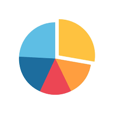

¿Que son las graficas de pastel?
Una gráfica de pastel es una representación visual en forma de círculo
dividido en sectores, donde cada sector muestra la proporción o
porcentaje que una categoría específica representa dentro de un
conjunto de datos. Se utiliza para mostrar la distribución relativa
de diferentes categorías y resaltar las proporciones en relación con
el todo.
Imagen De Una Grafica De Pastel:

Desarrollador: Handry Serrano Fabela